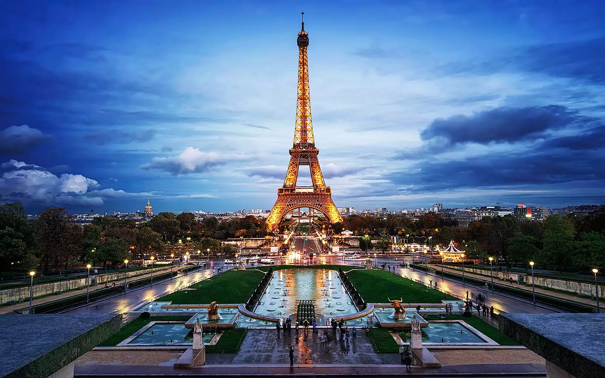

Eiffel Tower

The symbol of Paris, the Eiffel Tower is a feat of ingenuity as much as it is a famous landmark. This structure of 8,000 metallic parts was designed by Gustave Eiffel as a temporary exhibit for the World Fair of 1889. Originally loathed by critics, the 320-meter-high tower is now a beloved and irreplaceable fixture of the Paris skyline.The Eiffel Tower's gracefulness has earned it the nickname of "Iron Lady." Visitors are impressed by the tower's delicate airiness despite its monumental size and the breathtaking panoramas at each of the three levels.The Eiffel Tower was built from 1887 to 1889 by French engineer Gustave Eiffel, whose company specialized in building metal frameworks and structures. Gustave Eiffel is at the origin of many metallic works in Europe including the Porto Viaduct (Portugal), the Viaduct du Garabit (France) and the Budapest train station (Hungary).
Musée du Louvre
The Louvre Museum ranks among the top European collections of fine arts. Many of Western Civilization's most famous works are found here, including the Mona Lisa by Leonardo da Vinci, the Wedding Feast at Cana by Veronese, and the 1st-century-BC Venus de Milo sculpture. The Louvre is the world's largest museum and houses one of the most impressive art collections in history. The magnificent, baroque-style palace and museum LeMusée du Louvre in French sits along the banks of the Seine River in Paris. It is one of the city's biggest tourist attractions. The Louvre Palace houses the largest museum in the world. The twelfth century fortress was extended and refurbished several times throughout the centuries. Before it opened as a museum, King Charles V and Philippe II chose this palace as their residence, decorating it with their ever growing art collections.
Château de Versailles
The Château de Versailles emblematizes the grandeur of the French monarchy prior to the fall of the Ancien Régime. This UNESCO-listed monument represents a glorious moment of France's history, under the reign of Louis XIV (known as the "Sun King"), when the palace set the standard for princely courts in Europe. The most spectacular space in the palace is the Hall of Mirrors, where courtiers waited for an audience with His Majesty. This dazzling gallery sparkles with sunlight that enters through the windows and is reflected off hundreds of ornamental mirrors, while dozens of glittering chandeliers and gilded details make the overall impression even more marvelous.